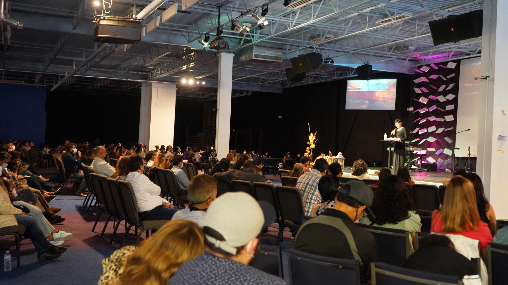
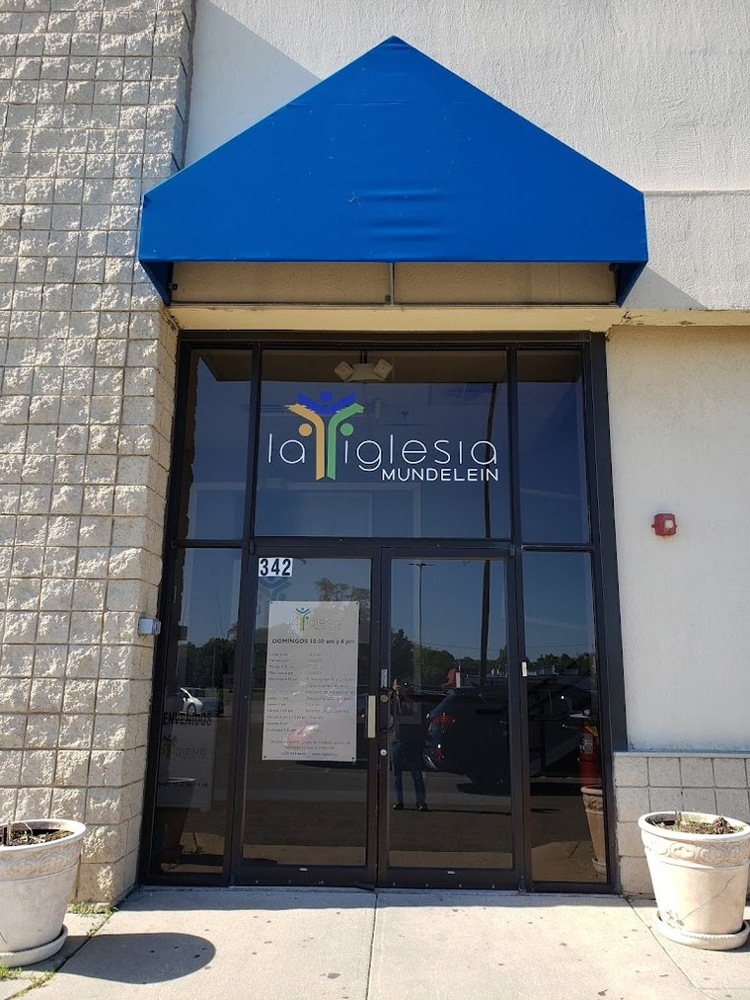
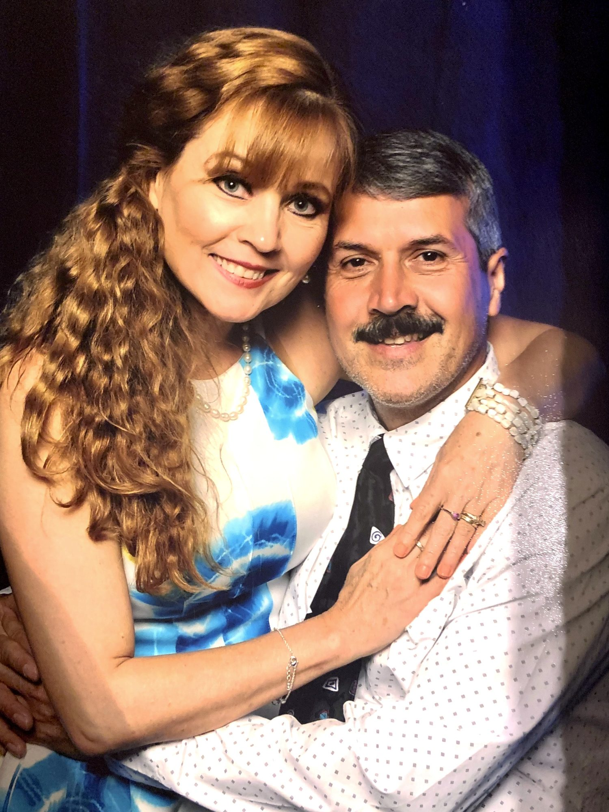

Conéctate
Discipulados en casas por toda el área: un grupo pequeño donde te conocen por nombre y oran por ti durante la semana.
Ver los discipulados
Domingos 10:30 am y 6:00 pm en 342 Townline Rd, Mundelein
Cada discípulo que se forma aquí lleva el evangelio a otro lugar. Algunos regresaron a sus países con la semilla del evangelio, otros se mudaron a otros estados, y cientos siguen firmes con nosotros. De ahí nacieron diecisiete iglesias, y hoy estamos plantando cuatro más.

342 Townline Rd
Mundelein, IL 60060
Junto al Salvation Army. Estacionamiento gratis en el lote.
10:30 am6:00 pm
No necesitas prepararte para nada. Llega como estás y siéntate donde quieras.
Domingos a las 10:30 am y a las 6:00 pm. Duran alrededor de hora y media.
Clases por edad con material propio durante el servicio, con maestros que ya conoces.
342 Townline Rd, junto al Salvation Army. Estacionamiento gratis en el lote.
Si no puedes venir, transmitimos en vivo y todas las predicaciones quedan guardadas para verlas cuando quieras.
Discipulados en casas por toda el área: un grupo pequeño donde te conocen por nombre y oran por ti durante la semana.
Ver los discipuladosClase de discipulado, estudio del bautismo y un plan de lectura diaria de la Biblia para seguir por tu cuenta.
Empezar a crecerAlabanza, niños, ujieres y el Ropero Comunitario, que viste a familias del área cada mes.
Quiero servir
Nuestros pastores
Originarios de Monterrey, México, se conocieron en un seminario y emigraron a Estados Unidos, donde Homero obtuvo su doctorado en teología sistemática en Trinity Evangelical Divinity School.
Al ver la cantidad de hispanos en Mundelein empezaron a hablarles de Cristo. De ahí nació esta iglesia, hace más de veinticinco años.
Tu ofrenda sostiene el trabajo de la iglesia, el Ropero Comunitario y las iglesias que estamos plantando.
Con tarjeta o cuenta de banco, una vez o cada mes.
Desde la app de tu banco, al número de la iglesia.
(224) 999-2398
Cheque a nombre de La Iglesia Comunidad Cristiana.
498 Buckingham Dr
Grayslake, IL 60030